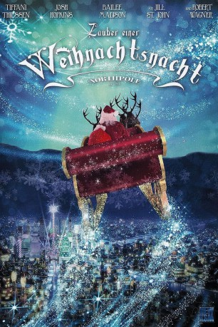

#7870 Zauber einer Weihnachtsnacht
Alternativ: Northpole
 
 IMDB-Wertung: 6.5 / 10
IMDB-Wertung: 6.5 / 10  Metascore: 0
Metascore: 0 
Elfe Clementine (Bailee Madison) ist in heller Aufregung. Ihre Heimatstadt Nordpol, Knotenpunkt der Geschenkeproduktion, ist dem Untergang geweiht. Gespeist aus der Weihnachtsvorfreude der Menschen droht das lebensspendende Nordlicht zu erlöschen! Als einzige Hoffnung bleibt nur der weihnachtsverrückte Kevin (Max Charles). Als Clementine Kontakt zu ihm aufnimmt, glaubt dessen Reportermutter ("Beverly Hills 90201"-Pausbäckchen Tiffani Thiessen) zunächst, dass ihr Sohn an Wahnvorstellungen leidet…
Jahr: 2014
Dauer: 84 Minuten
FSK: 0
Land: Kanada Studio: New KSMTonspuren: DTS - ,
Untertitel: Deutsch,
Auflösung: 1080p (1920x1080) Größe: 8970 MB
Genre: Fantasy, Weihnachten
Regisseur: Douglas Barr
Drehbuch: Gregg Rossen
Soundtrack: James Gelfand
Darsteller:
- Tiffani Thiessen als Chelsea Hastings
 Josh Hopkins als Ryan Wilson
Josh Hopkins als Ryan Wilson Bailee Madison als Clementine
Bailee Madison als Clementine Max Charles als Kevin Hastings
Max Charles als Kevin Hastings Jonathan Potts als Mr. Jenkins
Jonathan Potts als Mr. Jenkins- Jill St. John als Mrs. Claus
 Robert Wagner als Santa Claus
Robert Wagner als Santa Claus- Warona Setshwaelo als Jasmine
- Kyle Meagher als Norman
 Marcel Jeannin als Mr. Finster
Marcel Jeannin als Mr. Finster Dawn Ford als Silver Haired Lady
Dawn Ford als Silver Haired Lady- Joanna Noyes als Mrs. Tucker
- Howard Harris als Homeless Man
- Marc Primeau als Skating Townperson (uncredited)
 Nathaly Thibault als Councilwoman (uncredited)
Nathaly Thibault als Councilwoman (uncredited)- Candice Glover als Josephine
 Richard Fitzpatrick als Ernie Pendleton
Richard Fitzpatrick als Ernie Pendleton- Stéfanie Buxton als Clementine's Mom
 Frank Schorpion als Mayor Harold Spencer
Frank Schorpion als Mayor Harold Spencer- Ziad Ghanem als Chuck
- Danny Blanco Hall als Fireman
- Anne Cassar als Receptionist
- Chloe O'Malley als Andrea
- Ambrose McLaughlin als Enrique
- Conrad Warren als Kid
 Frank Fontaine als Old Guy
Frank Fontaine als Old Guy- Michael Dozier als Shopkeeper
- Trevor Botkin als Weather Editor
- Gabriel Maharjan als Passerby
- Laura Mitchell als Grandma Elf
- Una Kay als Great Grandma Elf
- Jane Gilchrist als Great Great Great Grandma Elf
- Francis Limoges als Bouncing Elf #1
- Jason Hsu als Bouncing Elf #2
- André Laperrière als Rescue Fireman
- Philippe Desormeaux als Pedestrian (uncredited)
- Naïla Flipo als Penelope (uncredited)
- Pamela Kuzminski als Extra (uncredited)
Datei: X:\2014(N-Z)\Zauber einer Weihnachtsnacht (2014, FSK0, 1920x1080).mkv seit 29.12.2017
Festplatte: HD 2013(I-Z)-2014(A-Z)
 Es gibt insgesamt 163 Filme in der Gruppe '2014(N-Z)'
Es gibt insgesamt 163 Filme in der Gruppe '2014(N-Z)'